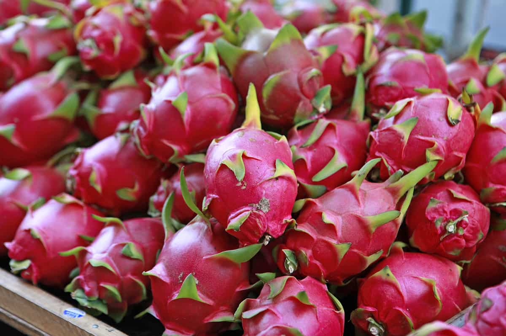

Unlock Your
Dragon Fruit’s
Vitality.
Leverage AI-powered analysis to assess freshness, detect issues, and optimize health for every dragon fruit.

Leverage AI-powered analysis to assess freshness, detect issues, and optimize health for every dragon fruit.

Why: No visible lesions, discoloration, or fungal growth patterns detected. The model confidently classifies this fruit as healthy, with key regions of interest highlighted by Grad-CAM and Heatmap, indicating firm flesh and no disease indicators.
The dragon fruit, also referred to as pitaya or pitahaya, is a common tropical and subtropical fruit that comes from a perennial plant in the genus Hylocereus of the Cactaceae family that originated in Central America [1,2]. It is classified into three species within the genus Hylocereus: Hylocereus guatemalensis (Hg), Hylocereus polyrhizus (Hp), and Hylocereus undatus (Hu), which is a pink peel and purple pulp; additionally, there is a yellow peel and white pulp species within Selenicereus, which is Selenicereus megalanthus (Sm).
In the Philippines, the dragon fruit industry has seen a significant surge in popularity, with local production expanding across regions like Ilocos and CALABARZON. The fruit is particularly in-demand during the summer season due to its high-water content and refreshing properties, making it a seasonal staple for Filipino consumers. However, the peak harvest often coincides with the country's extreme heat and high humidity levels, which significantly accelerate the ripening and eventual senescence (rotting) of the fruit.
The high ambient temperature in the Philippines shortens the shelf life of dragon fruit, leading to rapid microbial growth and physical degradation if not sorted and stored immediately. This poses a major challenge for local farmers and retailers, as manual inspection is often too slow to keep up with the volume of harvest during the peak months. Consequently, a substantial amount of produce is wasted before it even reaches the market.
Integrating an automated classification system, specifically one capable of distinguishing between healthy and rotten fruit, is crucial for the Philippine market to minimize post-harvest losses and ensure that only high-quality produce is distributed to consumers during the critical summer months.
Given these post-harvest hurdles, leveraging Deep Learning (DL) architectures presents a viable solution for the Philippine agricultural sector. By utilizing Convolutional Neural Networks (CNNs), the speed and accuracy of quality control can be significantly enhanced, replacing the error-prone and labor-intensive traditional manual sorting. This research explores the potential of high-efficiency models, specifically EfficientNet-B0 and MobileNetV2, to provide a rapid, automated, and accessible means of dragon fruit classification. Implementing such technology not only preserves the economic value of the harvest but also supports the sustainability of local dragon fruit farming amidst the challenging climatic conditions of the country.
In this study, the researcher aims to develop an automated classification system capable of accurately distinguishing between Healthy and Rotten Dragon Fruit images. To achieve high precision while maintaining computational efficiency, the researcher leveraged transfer learning using two state-of-the-art Convolutional Neural Network (CNN) architectures: EfficientNet-B0 and MobileNetV2. These models were chosen for their balanced performance in feature extraction and speed, which are critical for real-time agricultural applications.
The models were trained and fine-tuned on a custom dataset consisting of dragon fruit images categorized into healthy and rotten classes. To ensure the robustness of the system, Data Augmentation techniques, such as rotation, zooming, and horizontal flipping, were employed to enrich the dataset, enhance the models' generalization capabilities, and prevent overfitting. Additionally, Early Stopping and Model Checkpointing were implemented during the training phase to preserve the most optimal weights and prevent unnecessary computational overhead.
Through this research, the researcher evaluates the models using standard classification metrics, including Accuracy, Precision, Recall, and F1-score, alongside the analysis of Confusion Matrices. This evaluation aims to determine the most effective approach for dragon fruit quality assessment. Through this research, the researcher seeks not only to achieve high performance in fruit classification but also to provide a comparative analysis of model behaviors, proposing a scalable solution for local farmers and retailers in the Philippines to minimize post-harvest losses.
The classification of dragon fruit varieties can be effectively achieved by analyzing morphological properties through a multi-class classification approach. Research has shown that utilizing deep learning to evaluate physical characteristics allows for a more objective and sustainable method of variety identification compared to manual inspection, which is critical for maintaining quality control within the agricultural supply chain [1].
Furthermore, the broader application of fruit classification and detection has been explored using various deep learning frameworks. Systems capable of identifying multiple fruit types within complex backgrounds and fluctuating lighting conditions demonstrate that Convolutional Neural Networks (CNNs) significantly outperform traditional image processing techniques, offering a robust solution for automated sorting environments [2].
In terms of model architecture, the performance of EfficientNet-B0 has been evaluated for its ability to distinguish between complex image patterns, such as those found in AI-generated versus real imagery. Through the application of transfer learning, it was found that this model accurately detects synthetic patterns that are often imperceptible to humans, highlighting its versatility in handling sophisticated classification tasks [3].
For real-time applications, particularly on mobile or edge devices, the MobileNetV2 architecture combined with deep transfer learning has proven to be a highly effective solution. This approach prioritizes computational efficiency without sacrificing accuracy, making it ideal for agricultural environments where high-powered computing resources may be unavailable [4].
A specialized approach for dragon fruit involves not only classifying ripeness but also ensuring model interpretability. By integrating Grad-CAM (Gradient-weighted Class Activation Mapping), researchers have been able to provide visual explanations of the model’s predictions, highlighting the specific areas of the fruit skin that indicate ripeness to the user [5].
The current state of image-based fruit ripeness identification continues to evolve, with a wide range of models being developed from standard CNNs to advanced architectures. Reviews of these methodologies identify persistent challenges, such as the need for larger, high-quality datasets, which serves as a roadmap for future developments in smart farming and post-harvest automation [6].
Finally, comparative analyses of prominent models like EfficientNet-B0 and MobileNetV2 suggest that while deeper models provide significant power, EfficientNet-B0 often offers a superior balance of speed and accuracy. Such benchmarking is essential for selecting the most efficient candidate for real-time monitoring and classification tasks in various fields [7].
This study aims to develop a binary image classification model capable of accurately distinguishing between healthy and rotten dragon fruit images. To achieve this, Transfer Learning with pretrained Convolutional Neural Networks (CNNs) was employed. The overall methodology involves several key stages: model selection, dataset preparation, data augmentation and modification, training setup, and evaluation.
EfficientNet-B0: is the baseline model of the EfficientNet family, introduced by Google researchers who proposed a novel scaling method called compound scaling. Unlike traditional models that scale depth, width, or resolution independently, EfficientNet scales all three dimensions uniformly using a set of fixed coefficients. This results in a model that is significantly smaller and faster while achieving better accuracy than previous architectures like ResNet or Inception. The core of EfficientNet-B0 is the MBConv block (Mobile Inverted Bottleneck Convolution), which utilizes depthwise separable convolutions and squeeze-and-excitation modules to focus on the most relevant features of the fruit, such as texture and color changes indicating rot.
MobileNetV2: released in 2018, builds upon the foundation of its predecessor with several key architectural improvements designed to enhance both performance and efficiency [4]. The primary advancement is the introduction of the inverted residual block with linear bottlenecks. Unlike traditional residual blocks that expand and contract feature representations, MobileNetV2 starts with a narrow input, expands it into a higher-dimensional space using a 1×1 convolution, applies depthwise convolution to capture spatial features, and then projects it back down to the original dimension with another 1×1 convolution, without applying a non-linear activation in the final step. This linear bottleneck design helps preserve essential information during projection, reducing feature loss. Additionally, when the input and output dimensions match, residual connections are added to promote better gradient flow and feature reuse.
The experimentation and model development in this study were conducted using Python as the primary programming language, chosen for its robust ecosystem in machine learning. The models were built, trained, and evaluated using Keras with a TensorFlow backend, providing a high-level interface for modular deep learning development. Unlike traditional local setups, all processes were executed using Google Colab, a cloud-based development environment. This platform was selected because it provides access to high-performance Graphics Processing Units (GPUs), which significantly accelerated the training of deep architectures. Data management was facilitated through Google Drive integration, ensuring that the dataset and trained model files were securely stored and easily accessible.
The dataset used in this study comprises a total of 3,337 images, meticulously categorized into two primary classes: Healthy and Rotten. The data was gathered from two main sources to ensure both high-quality diversity and local relevance. Local Data was collected to capture real-world field conditions, while Internet Data (sourced from Kaggle and web repositories) provided a large-scale variety of decay patterns and lighting environments.
| Source | Healthy Images | Rotten Images | Sub-total |
|---|---|---|---|
| Local Data | 520 | 444 | 964 |
| Internet Data (Kaggle/Web) | 1,219 | 1,154 | 2,373 |
| Total | 1,739 | 1,598 | 3,337 |
To ensure compatibility with the selected convolutional neural network architectures, specifically EfficientNet-B0 and MobileNetV2, all images were resized to 224×224 pixels. This resizing process standardizes the spatial dimensions of the input data, ensuring consistent feature extraction across different model depths.
To improve the models' ability to generalize and to prevent overfitting, several Data Augmentation techniques were applied. These techniques simulate various environmental conditions (e.g., shadows, different camera angles, and lighting) that the system might encounter in actual agricultural settings. The following techniques were used:
Pixel values were normalized using the specific requirements of each architecture: EfficientNet scaling (keeping values within the 0-255 range but adjusting for mean/std) and MobileNetV2 scaling (rescaling pixels to the -1 to 1 range).
The dataset was divided using an 80-10-10 split:
The models were trained with the hyperparameters and configurations shown in Table 2:
| Hyperparameter | Configuration |
|---|---|
| Optimizer | Adam |
| Initial Learning Rate | 0.001 (Head Training) |
| Fine-tuning Learning Rate | 0.00001 |
| Loss Function | Binary Cross-Entropy |
| Batch Size | 32 |
| Epochs | 10 (Initial) + 15 (Fine-tuning) |
| Activation (Output) | Sigmoid |
The custom classifier was structured to balance complexity and regularization to mitigate overfitting. Table 3 details the layers added to the pretrained backbones.
| Layer | Details |
|---|---|
| Global Average Pooling | Reduces feature maps to a 1D vector |
| Batch Normalization | Stabilizes learning and accelerates convergence |
| Dropout (0.2 - 0.5) | Prevents overfitting by randomly deactivating neurons |
| Dense (Output) | 1 Unit with Sigmoid activation for binary classification |
Initially, the convolutional base of each model was frozen. Fine-tuning was later applied by unfreezing the upper layers to adapt the models to the dragon fruit dataset:
This fine-tuning strategy allowed the models to leverage existing pre-trained knowledge while adapting to the unique features of dragon fruit decay.
To evaluate the models' performance in classifying Healthy and Rotten dragon fruits, standard metrics were used: Accuracy, Precision, Recall, and F1 Score.
Accuracy represents the proportion of correct predictions (both true positives and true negatives) out of the total predictions. It provides a general performance overview.
Precision measures the reliability of positive predictions by calculating the ratio of true positives to all samples predicted as positive, evaluating the model's ability to avoid false positives.
Recall, or sensitivity, evaluates the model’s ability to correctly identify all relevant positive instances, offering insight into the capacity to minimize false negatives.
F1 Score combines Precision and Recall into a single metric by calculating their harmonic mean, which is highly beneficial for imbalanced agricultural datasets.
This section presents the training and evaluation results of the two models: EfficientNet-B0 and MobileNetV2. Each model's performance is evaluated based on Accuracy, Loss, and its ability to handle out-of-distribution (Unknown) objects.
EfficientNet-B0 demonstrated exceptional performance on our testing dataset. Table 4 summarizes the key performance metrics achieved.
| Metric | Healthy Class | Rotten Class | Weighted Avg |
|---|---|---|---|
| Precision | 0.98 | 0.98 | 0.98 |
| Recall | 0.97 | 0.99 | 0.98 |
| F1-Score | 0.97 | 0.98 | 0.98 |
| Accuracy | 98.49% | ||
The classification results for EfficientNet-B0 reveal an exceptionally high level of performance, with an overall accuracy of 98.49% across 687 test samples. The model demonstrates near-perfect consistency, achieving a precision of 0.98 for both classes, indicating a very low rate of false positives. Furthermore, the recall scores (0.97 for Healthy and 0.99 for Rotten) signify the model's high sensitivity.
The F1-score, which serves as the harmonic mean of precision and recall, sits at 0.97 and 0.98 for the respective classes. These balanced metrics are crucial for agricultural applications, as they ensure the system is equally reliable at certifying healthy fruit for sale and flagging diseased fruit for removal. With a weighted average F1-score of 0.98, EfficientNet-B0 proves to be a robust architecture for dragon fruit quality detection.
| Predicted Class | |||
|---|---|---|---|
| Healthy | Rotten | ||
Actual |
Healthy | 253(TN: 96.6%) | 9(FP: 3.4%) |
| Rotten | 5(FN: 1.2%) | 420(TP: 98.8%) | |
The Confusion Matrix highlights the model's high reliability in identifying rot, as it only misclassified 5 rotten samples as healthy (False Negatives). Conversely, only 9 healthy samples were incorrectly flagged as rotten (False Positives). The low number of False Negatives suggests that the model is highly effective at preventing contaminated or decaying fruit from reaching consumers. Meanwhile, the minimal False Positive rate ensures that healthy produce is not unnecessarily wasted.